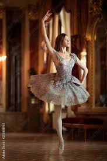
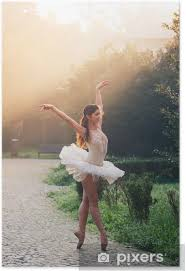
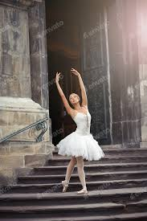
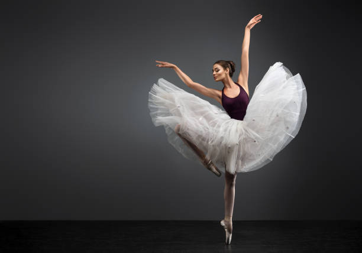

1 / 10

2 / 10

3 / 10

4 / 10

5 / 10

6 / 10

7 / 10

8 / 10

9 / 10

10/ 10

Dance is the art of expressing emotions, stories, and rhythms through movement. It blends physical movement with music, creativity, and culture, making it both a form of self-expression and a performance art. Dance is a form of artistic expression that uses the human body to convey emotions, tell stories, or celebrate culture through movement, rhythm, and music. It can be performed solo or with others and spans a wide variety of styles across different cultures and traditions.
Dance is a diverse and expressive art form that spans cultures and eras, encompassing a wide range of styles, each with its own unique techniques, history, and cultural significance. Ballet, known for its grace and precision, originated in the courts of Renaissance Italy and France, while contemporary dance blends elements of modern, jazz, and classical styles to explore emotion and abstract themes.
Why the art of dance is amazing. The art of dance is a form of expressive movement that uses the human body to convey emotions, tell stories, and embody rhythm.
Dance serves many powerful purposes across the world. It is a form of self-expression and storytelling, allowing people to share emotions, traditions, and ideas without words. Dance plays a role in celebration and ritual, from weddings to religious ceremonies, and helps preserve cultural identity. It brings people together socially and provides entertainment through performancess and shows. Beyond the stage, dance also promotes physical fitness, supports emotional healing, and can even be used for spiritual expression and therapy.
Dance is more than just movement it's a langauge of the body. The real art of dance is how people use rhythm,emotion, and expression to tell stories, release energy, and connect with others. Every step,jump, or spin carries meaning, even without words. Whether its ballet, hip-hop, african, or contemporary, each style shows something powerful-from tradition and culture to freedom and personal emotion.
Dance is a global language, and every culture has its own unique way of expressing it! Around the world, People use dance to celebrate, tell stories, wordship, or simply have fun.
Dances include: